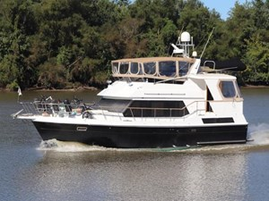

B-Scout Boat Guide · CHBY-40
CHB 40 Double Cabin Double Cabin
1978–1995
The CHB 40 is a large traditional aft-cabin flybridge cruiser with two private cabins, two heads and twin-diesel shaft propulsion in typical examples. The design emphasizes interior volume, teak joinery and displacement-speed cruising, but the current record spans configurations and production years that require individual verification.

- Length
- 40 ft
- Beam
- 13 ft
- Draft
- 4 ft
- Hull behaviour
- Semi-Displacement
- Fuel
- Diesel
- Propulsion
- Shaft
- Engine configuration
- Twin Inboard
- Boat family
- Trawler
- Construction
- Fiberglass
Best for
- Couples wanting generous aft-cabin accommodations
- Extended inland and coastal cruising
- Buyers prepared for yacht-scale maintenance and systems renewal
Trade-offs
- High profile, beam and displacement increase operating and marina costs
- Extensive aging systems and exterior teak can require major refit
- Specifications and builder details vary across examples
- Not documented as an offshore passagemaker merely because of its size
Known concerns
- No model-specific concern has been promoted to B-Scout’s evidence threshold. This does not mean the model has no age-, condition- or hull-specific risks.
Inspection focus
- Moisture-test teak-deck fasteners, deck penetrations, window surrounds and cabin-house joints
- Inspect fuel tanks, fill and vent hoses, supports and access for corrosion or leakage
- Inspect original wiring, shore-power equipment, bonding and later electrical modifications
- Inspect exhaust systems, engine mounts, shafting, rudders and steering gear
- Confirm builder, model configuration and major refit history from hull documentation
Continue researching
Related boat models
CHB 35 Sundeck Sundeck
35 ft · Semi-Displacement
CHB 34 Double Cabin Double Cabin
33.5 ft · Semi-Displacement
Cape Dory 40 Explorer Explorer
40 ft · Planing / Modified-V
DeFever 40 Offshore Cruiser Offshore Cruiser
40 ft · Semi-Displacement
Island Gypsy 40 Classic Classic
40 ft · Semi-Displacement
Marine Trader 40 Double Cabin Double Cabin
40 ft · Semi-Displacement
About this record
B-Scout preserves uncertainty: missing information remains unknown rather than being treated as a negative. Specifications and guidance describe the model record; individual boats can differ by year, equipment, refit and condition.